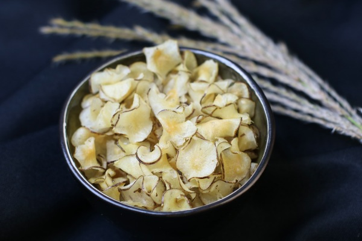

<h1> Aardpeerchips </h1>

<h2> Ingredienten </h2>
<ul>
    <li>Aardpeer</li>
    <li>Zonnebloemolie</li>
    <li>Peper</li>
    <li>Zout</li>
    <li>Dingen waar je van houd</li>
</ul>
<h2> Recipe </h2>
<p> Take Carrot, put in pear spice with salt and pepper</p>